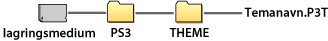

Innstillinger > Tema-innstillinger
Tema-innstillinger
Juster innstillingene for tilpasse XMB™-skjermen for elementer som bakgrunnen eller skriften på skjermteksten.
Tema
Du kan justere innstillinger for å tilpasse designet på elementer som ikoner eller bakgrunnen som vises på XMB™-skjermen. Temaet kan justeres med én av følgende metoder.
Velge et forhåndsinstallert tema
Velg et tema som er forhåndsinstallert i PS3™-systemet.
Laste ned et tema til PS3™-systemet
Når du laster ned et tema fra  (PlayStation®Store) eller ved å bruke
(PlayStation®Store) eller ved å bruke  (Nettleser), installeres det automatisk på PS3™-systemet etter at nedlastingen er ferdig.
(Nettleser), installeres det automatisk på PS3™-systemet etter at nedlastingen er ferdig.
Installere et tema med en spillplate eller kommersielt tilgjengelig Blu-ray Disc-videoprogramvare (BD-ROM)
For å installere og bruke en temafil på et diskmedia, velger du  -ikonet under
-ikonet under  (Spill), og deretter temafilen som du vil installere. Temaet brukes automatisk som systemtema når installasjonen er ferdig.
(Spill), og deretter temafilen som du vil installere. Temaet brukes automatisk som systemtema når installasjonen er ferdig.
Lage eller laste ned et tema på en PC
Når du laster ned et tema fra en webside eller lager et tema med en PC, lag en ny mappe med navnet [PS3] - [THEME] på lagringsmediet, og lagre deretter temaet i denne mappen. Temafiler må lagres med filendelsen [.P3T].

For å installere temaet på PS3™-systemets harddisk, kobler du lagringsmediet med temafilen til systemet, og velger deretter  (Innstillinger) >
(Innstillinger) >  (Tema Innstillinger) > [Tema] > [Installer].
(Tema Innstillinger) > [Tema] > [Installer].
Tips
- Et symbol som ikke er en del av temaet, skiftes ut med et annet symbol i temafilen, eller det forblir det samme som det vanlige XMB™-skjermsymbolet.
- Hvis en temafil inneholder flere bakgrunner, endres temabakgrunnen vilkårlig.
- Det finnes programvare for PC som lar deg opprette dine egne temafiler for bruk på PS3™-systemet. (Kommersielt tilgjengelig pogramvare for oppretting av grafiske elementer er også nødvendig.) For mer informasjon, besøk SCE-nettstedet for din region.
- Med noen modeller av PS3™-systemet kan det hende at en USB-adapter (ikke inkludert) er nødvendig for å bruke lagringsmedia.
Slette temaer
Velg temaet som du vil slette, trykk på  -knappen, og velg deretter [Slett].
-knappen, og velg deretter [Slett].
Farge
Sett bakgrunnsfargen på XMB™-skjermen.
| Original | Sett den originale bakgrunnsfargen. |
|---|---|
| (fargelapp) | Sett den valgte fargen som bakgrunnsfargen. |
Bakgrunn
Setter bakgrunnen som brukes i temaet eller bildet som er valgt som bakgrunnsbilde under  (Foto) som bakgrunnen på XMB™-skjermen.
(Foto) som bakgrunnen på XMB™-skjermen.
| Lysstyrke | Endre lysstyrken på bakgrunnen. |
|---|---|
| Original | Sett det originale temaet. |
| Classic | Sett til [Classic]-temaet. |
| (temanavn) | Sett for å bruke bakgrunnen for temaet som ble satt under [Tema]. |
| Bakgrunnsbilde | Setter bildet som ble valgt som bakgrunnsbilde under (Foto) for bakgrunnen. |
Font
Sett skrifttypen som skal brukes i XMB™-skjermen eller i meldinger under  (Venner). Når systemspråket er satt til koreansk, forenkelt kinesisk eller tradisjonell kinesisk, kan du ikke velge denne innstillingen.
(Venner). Når systemspråket er satt til koreansk, forenkelt kinesisk eller tradisjonell kinesisk, kan du ikke velge denne innstillingen.
Tips
Skrifttypene som er tilgjengelig varierer avhengig av systemspråket som er i bruk.